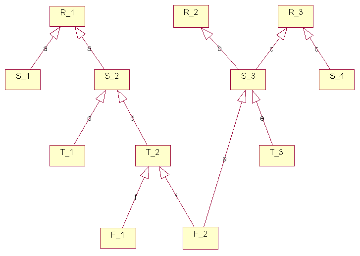
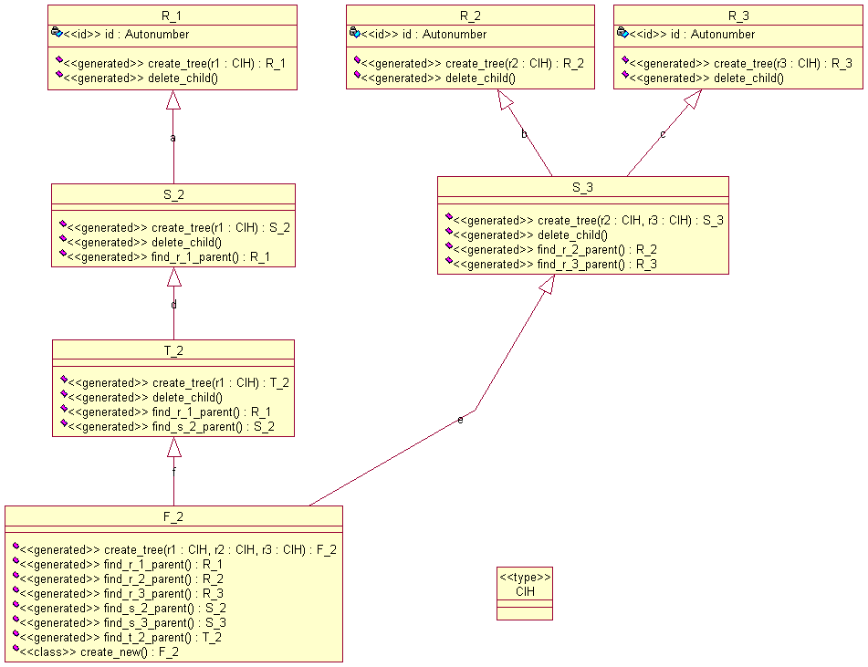

There's additional support, particularly for dynamic classification (subtype migration). It's in child packages Domain.Class.Inheritance, one for each class involved in inheritance relationships.
There are two motivations for the use of a child package:

The picture shows a fairly complex inheritance hierarchy.

This picture shows a subset of the hierarchy, with all the generated operations (in Domain.Class.Inheritance). The operation create new() was included to show that an operation of a class can invoke operations declared in child packages of the class (specifically, Inheritance.Create_Tree).
All of the classes have a Create_Tree function. This function has as many parameters as there are "ultimate" or "root" ancestors; so classes which are in fact roots classes themselves have only the one parameter. The parameters' names are the abbreviations of the ultimate ancestor classes, and the types are all ColdFrame.Instances.Handle.
As you'd expect from the name, the operation creates complete trees. The simple example is where you don't already have any instances and just want to create the tree all the way to the root(s): so, say you wanted a new F_2, you'd write
F2_H := F_2.Inheritance.Create_Tree (null, null, null);
which results in new instances of R_1, R_2, R_3, S_2, S_3, T_2 and F_2, all properly linked.
Note, this can only work where the root classes have Autonumber identifiers. If you have a root class with a user-supplied identifier, ie with a Create function that takes parameters, you'll need to do the root creation for this class yourself:
R1_H := R_1.Create ((Name => +"Foo")); F2_H := F_2.Inheritance.Create_Tree (R1 => ColdFrame.Instances.Handle (R1_H), R2 => null, R3 => null);
(if you don't, you'll get a ColdFrame.Exceptions.No_Default_Create exception).
If you already have a T_2 (in T2_H) and want to create a new F_2 with a new right hand side, you'd say
F2_H := F_2.Inheritance.Create_Tree (R1 => ColdFrame.Instances.Handle (T2_H), R2 => null, R3 => null);
If you already have an S_3 (in S3_H) and want to create a new F_2 with a new left hand side, you'd say
F2_H := F_2.Inheritance.Create_Tree (R1 => null, R2 => ColdFrame.Instances.Handle (S3_H), R3 => ColdFrame.Instances.Handle (S3_H));
So, the rule is that you supply the handle of the existing parent on the way to each root class; and, if the existing parent has two (or more!) root ancestors, you supply its handle for each. If you make a mistake here, you'll get one of two exceptions from ColdFrame.Exceptions:
Each child class has an operation Domain.Class.Inheritance.Find_parent-class_Parent for each parental class, returning parent-class.Handle.
All classes that have children (ie, not F_2 in the diagram) have a Delete_Child operation. This deletes the entire subtree beneath.